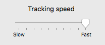
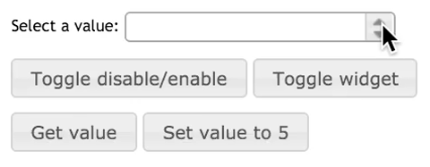

Mac OS X

Windows 8

iOS 7 vs iOS 8

One of many graphical user interface components that users have had experience with. For example, changing the volume setting on the computer or on a video streaming website.
A slider is a control element that uses a knob or lever moved horizontally to control a variable, such as volume on a radio or brightness on a screen.
by Aurora Bedford
Sliders across many different platforms have a minimum(left) value and a maximum value(right). Graphically, the users are exposed with a bar, slider knob, and occasionaly with tick marks. However, different platforms may have different designs to their sliders to follow their human interface guidelines. Underneath, a depiction of three sliders are shown Mac OS X, Windows 8, and iOS 7 & iOS 8.
The behavior of the slider is very basic. The user is given a choice to either slide left(min) or right(max). By doing so the user can choose the proper setting they are looking for. The slider will not acitvate until the user clicks on the knob and then drags it to their desired setting. Most sliders across different platforms carry the same behavior. We will see how Mac OS X specifically stands out behaviorally in the "Platform-Specfic" section.
Events
hover-ing over the slider knob gives you a quick description of what the slider does.unhover-ing the slider knob dismisses the quick description.click-ing the slider knob changes the tint of the knob and activates the knob to either be dragged left or right.- While
drag-ing the slider knob, the knob focuses on the tick marks.- Clicking on the
barwhere tick marks are present, quickly allows the user to set their setting without performing thedrag-ing eventrelease-ing the slider knob will set the knob to the latest value.
click-ing the slider knob changes the tint of the knob and activates the knob to either be dragged left or right.- While
drag-ing the slider knob, the knob is smoothly draggable across the bar.- Clicking anywhere on the
bar, quickly allows the user to set their setting without performing thedrag-ing eventrelease-ing the slider knob will set the knob to the latest value.
At first the user is presented with a slider that is enabled for use. When the userhover-s over the slider knob, a tool-tip pops up with a description of what the slider does.Unhover-ing the slider knob dismisses the tool-tip and returns to the enabled state. Byclick-ing the knob it changes the tint of the knob and enables the knob to becomedrag-able.Release-ing the knob returns to the enabled state. Finally, when the userclicks on thebarit automatically returns to the enabled state.
State diagrams here are similar to those of sliders wth tick marks. At first the user is presented with a slider that is enabled for use. When the userclick-s the slider knob it changes the tint of the knob and enables the knob to becomedrag-able.Release-ing the knob returns to the enabled state. Finally, when the userclicks on thebarit automatically returns to the enabled state.


There are variants of sliders which perform similar tasks that users might consider over. Since choosing a specific value/preference from a slider can be done by dragging the slider knob. We can achieve the same goal with drop down menus. With drop down menus the user is exposed with links. The user then can scroll through the links to choose the preffered link. Aside from the drop down menus, the spinner is probably the closest component to a slider. The spinner component allows you to hold the up and down keys to increase or decrease a value. The GIF provided underneath depicts how the spinner component works.
Talk about the five usability metrics in relation to this component. Not all components will have the same metric priorities. For example:
Because the button is such a fundamental part of virtually every user interface available today, it can be said that all usability metrics are equally important for this component. Users who are seeing a button in a given platform for the first time must not have any issues recognizing it and knowing what to do with it (learnability). The high priority of learnability also implies that memorability is a given.
Users must also never experience undue delays with using a button (efficiency), particularly because using a button almost always involves an instantaneous, immediate-result action. Users should almost never trigger a button by mistake (errors)—especially buttons whose actions result in significant changes to data or the real world.
If any metric at all can be considered as a “low priority” for buttons, it would be satisfaction. The button is such a utilitarian component that “fun” or “enjoyment” is hardly associated with its use. One exception to this prioritization may be for buttons in applications whose primary metric is satisfaction (e.g., games, entertainment). As a part of that overall system, making buttons “fun” may then become more important than in other situations.
This section is for describing “what makes for a good your component here?” Most likely, this is an amalgam of guidelines documents and platform-independent interaction design principles.
Perhaps the most important interaction design principle that a button must follow is feedback. Users must never doubt whether:
This is where things can get really interesting—platform-specific sections go here. Different versions of the same system are considered to be platforms in their own right (e.g., Windows 95 buttons vs. Windows 10 buttons). Completely customized versions of a component (e.g., a unique-looking/-acting button made specifically for a game) are also acceptable here.
The outline for platform-specific entries resembles the outline already described above, except with a focus on how the platform-specific version is different. Thus, you will want some notes on appearance (i.e., more screenshots), behavior, variants, metrics, and characteristics. If some aspect is the same, then say so explicitly so that there is no confusion.
Some platform-specific instances of certain user interface components will merit such a rich discussion that they may require a sizable number of supporting assets. In that case, feel free to add subfolders to the main component folder, named after the platform under examination.
This could well be the most distinctive part of the catalog—the sections above this generally appear in user interface guidelines, albeit with a platform-specific focus. A key premise of the Paradixm project is to compare user interface elements across platforms. Thus, feel free to be creative about presentation here. You might want to display a visual gallery, for example, with links leading to individual pages for each covered platform-specific user interface component.